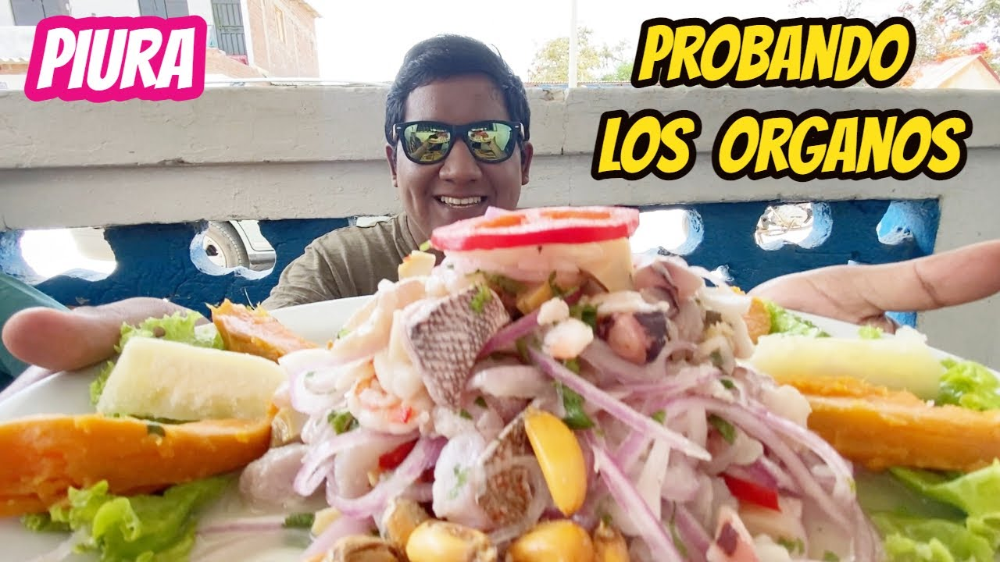
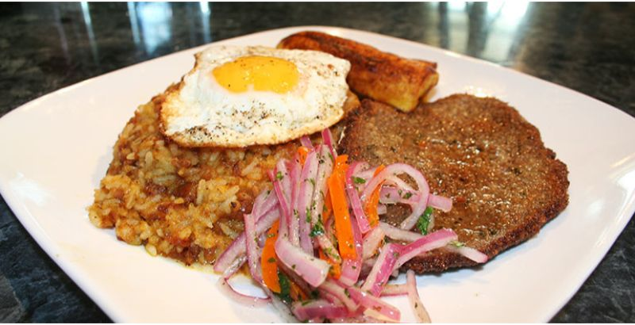
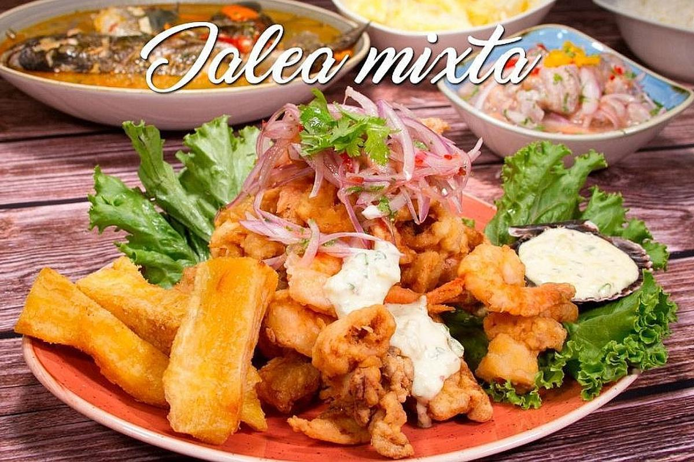
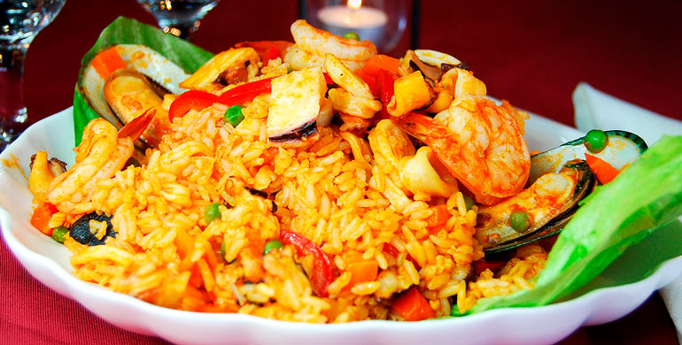
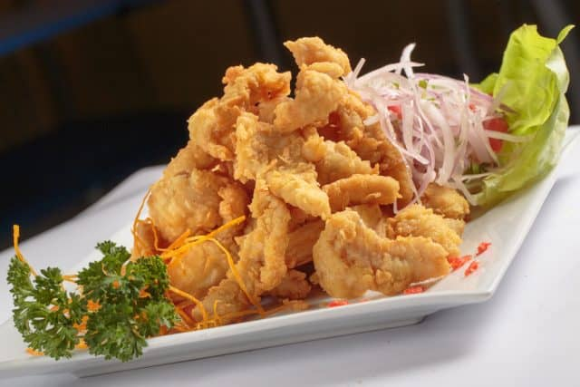
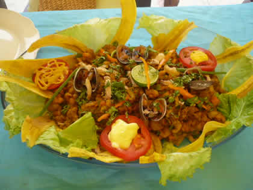

Ceviche
El ceviche es el plato estrella de la costa peruana. Se prepara con pescado fresco, jugo de limón, cebolla, ají y cilantro, acompañado de choclo y camote.

Tacu Tacu
Un plato típico que combina arroz y frejoles cocidos, mezclados y fritos juntos, servido con carne, huevo frito o plátano frito.

Jalea Mixta
Un plato que mezcla mariscos y pescados fritos, acompañados de yuca, ensalada criolla y salsa tártara.

Arroz con Mariscos
Delicioso arroz sazonado con especias y cocinado con una variedad de mariscos, como calamares, conchas, camarones y pulpo.

Chicharrón de Pescado
Pescado fresco empanizado y frito, acompañado de papas fritas, yuca y ensalada de cebolla con limón.

Majarisco
Plato tradicional preparado con plátano verde triturado, acompañado de un guiso de mariscos que le da un sabor inigualable.